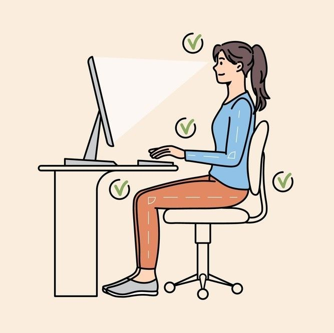

Mouvements des doigts
Ne regardez ni les touches, ni le clavier lorsque cous tapez: pour vous,
rappelez vous de faire glisser vos doigts jusqu'à qu'ils rencontrent la
rangée d'appui grâce au marquage. Ne faites que les mouvements nécessaires
pour frapper une touche spécifique : ni plus, ni moins. Pour augmenter votre
vitesse de frappe, gardezvos doigts et vos mains proches de la position de base.
Cela limitera également la tension sur vos mains. Gardez à l'esprit que vos annulaires
et auriculaires sont bien moins développés que vos autres doigts.

Position sur la rangée d'appui
Courbez vos doigts légèrement: positionnez les sur la rangée du milieu du clavier,
sur les lettres QSDF et JKLM. Il s'agit de la rangée d'appui, puisque vous
commencez à partir de ces lettres et y revenez toujours.Sous vos index se
trouvent les touches F et J, qui devraient avoir sur elles un trait en relief,
qui permet de retrouver facilement ces lettres sans regarder votre clavier

Privilégier une position assise
Assurez-vous de garder le dos bien droit
Vos coudes doivent être pliés au bon angle.
Inclinez légèrement votre tête pour faire face à l'écran.
Il faut conserver une distance de 45 à 70 cm entre vos yeux et votre écran.
Évitez toute tension sur les muscles de l'épaule, du bras, et du poignet.
Les poignets peuvent reposer sur l'espace devant le clavier,
mais ne déplacez jamais votre poids en reposant sur eux

Vitesse de frappe
Lorsque vous débutez, n'essayez pas d'aller trop vite. Accélérez
lorsque vos doigts ont pris de bonnes habitudes.
Vous irez plus vite avec le temps: pour éviter les erreurs, ne vous précipitez pas.
Lorsque vous lisez le texte, ayez toujours un mot ou deux d'avance.
Si vous éprouvez des difficultés à taper, utilisez le test du clavier pour
déterminer s'il s'agit d'un problème logiciel ou matériel.
Si vous voulez dépasser la vitesse moyenne de frappe, suivez tous les cours disponibles sur Ratatype.